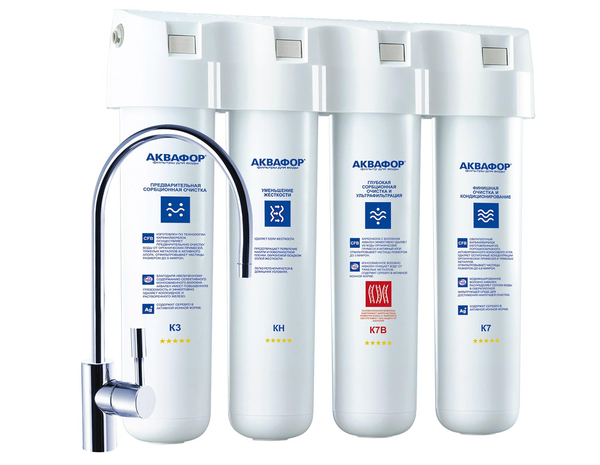

Больше года я покупал домой чистую воду «Норинга». Для удобства пользования водой из бутылок даже был приобретён кулер. Он служил это время не столько кулером (охлаждение мы часто отключали) и не нагревателем, а просто подставкой под бутылку и краном.
Вода «Норинга» меня всем устраивала и я даже как-то не задумывался об альтернативах. Так бы и покупал бутилированную воду до сих пор, но компания решила пересмотреть режим доставки. Примерно с декабря доставку можно было назначить только на промежуток в три часа. Таким образом вечерняя доставка расширилась с 19–21 до 18–21. До 7 часов вечера дома могут быть только бездетные фрилансеры, и пару раз доставщику пришлось ждать нас у порога с кислым лицом. Ещё пару раз он начинал звонить часа в 4 дня, мол, можете подъехать, принять воду. Как выяснилось, вечером кроме меня воду часто больше вести ему было некуда и я, похоже, доставлял опрятному доставщику в униформе грусть. Меня это стало напрягать.
Я спросил на Фейсбуке рекомендаций нового продавца чистой воды и выяснилось, что подавляющее большинство куда прогрессивней меня и не покупает бутилированную воду, а пользуется фильтром.
Вечер я посветил изучению предлагаемых в Кемерове моделей фильтров. В отборе не участвовали модели использующие технологию обратного осмоса. Такие модели на выходе позволяют получать идеально чистую воду, практически стерильную. Но я отношусь к людям, считающим что в стерильные условия скорее вредны человеку, поэтому рассматривал лишь традиционные модели.
Фильтры Аквафор, а именно они в основном продаются в магазинах Кемерова, отличаются по сути лишь количеством и набором входящих в устройство фильтрационный модулей. Плюс ещё продаются модели в которых фильтрационные модули продаются без корпусов. Процедура замены таких модулей чуть сложнее, чем современных.
Свой выбор я остановил на модели Аквафор Кристалл Эко Н.

Это бытовой фильтр, оснащённый четырьмя модулями:
— K3, отвечает за предварительную очистку воды от активного хлора, тяжелых металлов и органических веществ
— КH, смягчает воду
— К7B, финишная очистка и кондиционирование воды
— К7, ещё одна финишная сорбционная очистка и кондиционирование
Кроме самого фильтра в коробке присутствует всё необходимое для его монтажа и даже отдельный кран для питьевой воды.
Такой комплект на момент написания этого текста стоит 5490 рублей. Перед Новым Годом со скидкой я купил его за 4200.
Преимущества фильтров для воды в цифрах
До установки фильтра для воды нам приходилось покупать в среднем две 19-литровых бутылки воды каждую неделю. Мы использовали эту воду для питья, очень редко для приготовления пищи. Две бутылки воды «Норинга» стоили 450 рублей (не самая дешёвая вода, да). Значит в год на чистую воду наша семья тратила немногим больше 20 тысяч рублей. Потребляли мы около 2000 литров воды. Литр такой воды обходился нам в 11,84 рубля
Заявляемый производителем ресурс фильтрационных модулей — 8000 литров. После этого, но желательно не реже, чем 1 раз в год их нужно заменить. Стоимость комплекта модулей по сегодняшним ценам составляет 3152 рубля. Как видно, в год мы потребляли только четверть рекомендуемого ресурса. Даже, если сейчас начнём шиковать и пить воду по поводу и без, то вряд ли выпьем в 4 раза больше. Значит ресурса хватит на год. Стоимость литра воды составит в итоге около 1,5 рублей, что примерно в 8 раз меньше, чем в случае с «Норингой». Экономия — около 1500 рублей в месяц.
Немаловажным фактором стал человеческий. В случае с бутилированной водой нужно было всё-таки следить за её наличием, плюс несколько раз возникали накладки по времени, когда нужно было оставаться дома в ожидании доставки, когда хотелось уехать, чтобы посмотреть мир.
Фильтр достаточно прост в установке, правда пришлось купить ещё сверло 12 мм, чтобы сделать отверстие в раковине. Если вы не сантехник в душе, можно заказать установку у продавца (стоит 300 рублей).